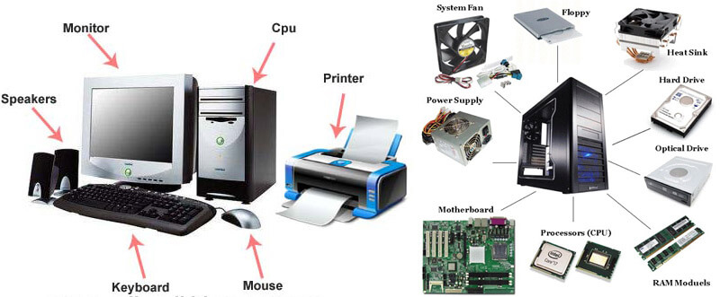
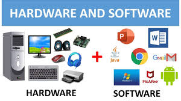
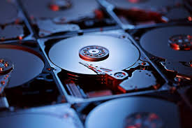

## Topic: Essential Computer Prerequisites Everyone Should Know
Content:
In today’s digital world, computers are everywhere. They are no longer used only by software
engineers,
IT professionals, or office employees. Every student, teacher, business owner, freelancer, and even a
regular smartphone user interacts with computers in some form. Because of this, understanding the basic
principles of computers has become essential for everyone.
Before moving toward advanced tools, programming languages, or professional software, it is important to
build a strong foundation. You should know how a computer works, what components it is made of, how it
stores and processes information, and how operating systems, networks, and the internet function. When you
understand these basics, everything else in technology becomes easier to learn.
This website is designed to guide complete beginners through the most important concepts of computer
knowledge. All topics are explained in a simple, practical, and easy-to-understand manner—without using
confusing technical words. Whether you want to improve your general computer skills, prepare for studies,
boost your job opportunities, or start exploring a career in technology, this content will help you take the
first step with confidence.
The goal of this website is to make you feel comfortable, confident, and capable while using a computer.
Once you understand the basics well, you will find it much easier to explore new technologies, learn
programming, improve productivity, and keep up with the fast-changing digital world.
# You Will Learn Here:
Meaning and characteristics of a Computer
Difference between Hardware and Software
Types of storage devices used in computers
Importance and role of an Operating System
Basic internet concepts and cyber safety rules
## Understanding a Computer
Definition:
A computer is an electronic machine that receives input, processes data according to given instructions,
stores information, and produces meaningful output. It works with the help of hardware (physical parts) and
software (programs). When you give a command—like typing on a keyboard, clicking a mouse, or tapping on a
screen—the computer understands it as input.
Inside the computer, a powerful part called the CPU (Central Processing Unit) processes the data at
extremely high speed. The computer also has memory and storage systems that help it temporarily hold
information (RAM) or save it permanently (hard drive or SSD). After processing the input, the computer shows
the result on the screen, prints it, or performs another action that you can understand.
Computers can perform millions of operations in just one second. They do not make mistakes unless the
instructions are wrong, and they never get tired or bored. These qualities—speed, accuracy, reliability, and
ability to store large amounts of data—make computers far more efficient than humans when it comes to
calculations, repetitive work, and data processing.
Because of these features, computers are used everywhere today—education, business, hospitals, banking,
science, entertainment, communication, and almost every field that needs fast and accurate work.
# Key Characteristics of a Computer:
Speed: Can perform millions of operations within a second.
Accuracy: Provides correct and error-free results when instructions are correct.
Storage: Can store a huge amount of information for long durations.
Reliability: Works consistently without losing efficiency.
No Emotions: Does not think or feel, only follows instructions exactly.
# Main Parts of a Computer System:
Component
Explanation
Input Devices
Used for entering data into the computer (Keyboard, Mouse,
Scanner)
Output Devices
Used to display results and information (Monitor, Printer,
Speakers)
CPU (Central Processing
Unit)
Brain of the computer that processes data and controls
operations
Memory/Storage
Used to store data temporarily or permanently

## Hardware vs Software
Explanation:
A computer system is built from two essential components: hardware and software. Both are
equally important, and one cannot function without the other.
Hardware Hardware refers to all the physical
parts of a computer system. These are the components you can see and touch. Hardware includes devices
that help you give input to the computer, display output, store information, and process data. Examples
of hardware include the monitor, keyboard, mouse, CPU cabinet, hard disk, printer, speakers, and even
internal parts like RAM, motherboard, and power supply. Without hardware, a computer would have no
physical structure to work on.
Software refers to the programs, applications,
and instructions that tell the hardware what to do. Software cannot be touched or physically seen,
because it is not a physical object—it exists as code written by programmers. However, you can see its
output on the screen when you use apps like a web browser, games, calculator, or music player. Software
controls how hardware works and guides the computer to perform specific tasks such as browsing the
internet, playing videos, typing documents, or running a program.
Comparison Table:
Hardware
Software
Physical components of a computer
Programs and instructions
Can be touched and seen
Cannot be touched, only experienced
Example: Keyboard, Mouse, Monitor
Example: Windows OS, MS Word, Chrome
Can get damaged physically
Can get corrupted or affected by viruses
## Types of Software:
System Software: Controls hardware and
provides a platform for applications
(Examples: Windows, Linux, Android).
Application Software: Designed for specific user
tasks (Examples: MS Office,
Photoshop, Browsers, Games).

## Types of Storage
Explanation:
Storage devices are essential parts of a computer that help in saving data, files, programs, and even the
operating system so the computer can function properly. These devices hold information either temporarily or
permanently. Temporary storage, such as RAM, is used while the computer is working; it stores data only for
the time the computer is on and is cleared when it is turned off. Permanent storage, such as hard drives and
SSDs, keeps data safe even when the computer is shut down, allowing you to save documents, photos, videos,
software, and system files for future use. Together, temporary and permanent storage ensure that a computer
can process information quickly and also preserve important data for long-term access.
Used to save files, software, and operating systems
Holds temporary data while processes are running
Slower than primary memory but has a larger capacity
Examples: Hard Disk Drive (HDD), Solid State Drive (SSD), USB Flash Drive, Memory Card
Comparison Table:
Primary Storage
Secondary Storage
Temporary memory
Permanent memory
Very fast
Slower comparatively
Small capacity
Large capacity
Used during processing
Used for data storage

## Operating System
Explanation:
An Operating System (OS) is a special type of system software that controls and manages all the hardware and
software resources of a computer. It acts as a link between the user and the machine, making it possible for
you to give commands and for the computer to understand and execute them. The OS handles tasks such as
running applications, managing memory, organizing files, controlling input–output devices, and ensuring all
hardware parts like the keyboard, mouse, CPU, and storage work together smoothly. Without an operating
system, a computer would be unable to start, load programs, or perform even basic functions, because it
would have no instructions on how to communicate with hardware or respond to user actions. In simple words,
the OS is the “brain” that makes the computer usable, efficient, and capable of performing multiple tasks at
the same time.
Functions of an Operating System:
Manages memory, CPU, and storage
Controls input and output devices
Holds temporary data while processes are running
Helps install and run software applications
Provides an interface for users (desktop, icons, menus)
Types of Operating Systems:
Category
Examples
Desktop OS
Windows, macOS, Linux
Mobile OS
Android, iOS
## Internet & Safety
Internet Basics and Cyber Safety :
The Internet is a worldwide network of millions of computers and devices connected together to share
information and communicate with each other. It allows people to send messages, browse websites, watch
videos, study online, shop from anywhere, use social media, and perform countless everyday activities with
just a few clicks. The internet works by transferring data across connected networks, making information
accessible instantly from any part of the world. However, while the internet offers great convenience and
opportunities, it also carries risks if not used carefully. Without proper safety practices—such as using
strong passwords, avoiding suspicious links, and protecting personal information—users can face dangers like
online scams, hacking, viruses, and data theft. Therefore, understanding how to use the internet safely is
just as important as knowing how to use it effectively.
Difference between Browser and Search Engine:
Browser: A software used to open and view
websites (Examples: Google Chrome,
Microsoft Edge, Safari).
Search Engine: A tool used to search
information on the internet (Examples:
Google, DuckDuckGo, Bing).
Basic Cyber Safety Tips:
Use strong passwords containing letters, numbers, and symbols.
Do not share personal details like address, bank information, or passwords publicly.
Avoid opening unknown links or suspicious attachments.
Use antivirus software and update your device regularly.
Avoid online payments through public Wi-Fi networks.